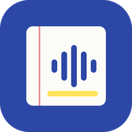
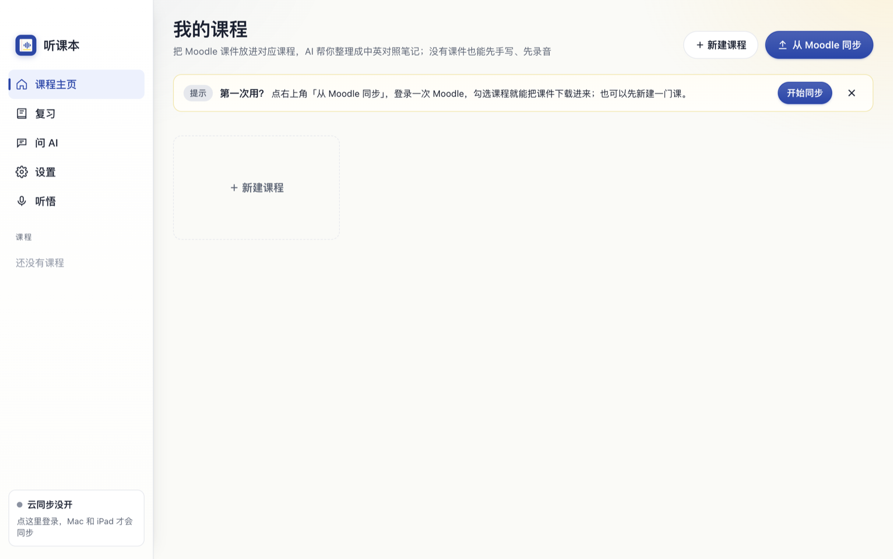

听课本听课本把 Moodle 上的课件拉下来，上课时边录音边转写，课后让 AI 帮你整理成中英对照的笔记。Mac、Windows、iPad 都能用，数据存在你自己的设备上。

为「用英文上课、课后要复习」的学生做的。
登录一次 Moodle，勾选课程，课件按周归类下载。已有的不重下，老师改过的自动更新。目前适配 Monash Moodle。
边听边出文字，可以同时出中文翻译。录音和转写跟着对应的课件走。
把课件和录音整理成中英对照的笔记，标出重点；看不懂的地方直接问 AI。
PPT、Word、Keynote 会转成 PDF 按原样显示，iPad 上用笔直接写。
按课程出复习题，记录做题进度；主页会列出快到期的作业和测验。
Mac、Windows、iPad 之间自动同步课程、课件、笔记和手写。可选，不登录也能用。
选你的设备。
| 设备 | 下载 | 说明 |
|---|---|---|
| Mac | 听课本 Mac 版（.dmg） | 只支持 Apple 芯片（M1 及以后）。Intel 的 Mac 请用网页版。约 120 MB。 |
| Windows测试版 | 听课本 Windows 版（.exe） | Windows 10 / 11，64 位。约 120 MB。还没在很多电脑上试过，遇到问题请反馈。 |
| iPad / 其他 | 打开网页版 | 不用安装。iPad 用 Safari 打开后「添加到主屏幕」。 |
| 浏览器插件 | 听课本助手 （.zip） | 只有网页版需要：用来从 Moodle 拉课件。Mac / Windows 版已经内置，不用装。 |
GitHub 下载太慢？用网盘下载
听课本是个人项目，没有花钱买苹果和微软的开发者签名，所以第一次打开时系统会多问一句。照下面做就行。
.dmg，把「听课本」拖到旁边的「应用程序」文件夹。如果提示的是「“听课本”已损坏，无法打开」（文件其实没坏，是系统给网上下载的应用打的标记）：打开「终端」，粘贴下面这行回车，再重新打开。
xattr -cr /Applications/听课本.app
较老的系统（macOS 14 及以前）更简单：在「应用程序」里右键点听课本 → 打开 → 再点「打开」。
.exe。如果浏览器说「不常下载此文件」，选「保留」。PPT / Word 课件要按原样显示，需要电脑上装了 Microsoft Office（听课本用它在后台转成 PDF）。没装的话仍然能读出文字，只是版式不保留。
作用：你在 Chrome 里登录 Monash Moodle 之后，点一下插件，就把课件、作业要求、测验信息、截止日期同步进听课本。账号密码只在学校页面里输入，插件不保存。
tingkeben-helper.zip，解压，得到 tingkeben-helper 文件夹。chrome://extensions 回车。tingkeben-helper 文件夹。更新插件：下载新的 zip，解压覆盖原来的文件夹，回到 chrome://extensions 点插件卡片上的刷新按钮。
只有一台设备可以跳过这一节。不登录云服务，所有功能照常能用，数据只在本机。
设置 → 云同步 →「我有邀请码，注册」→ 填邀请码，自己定用户名和密码。换设备时用同一个用户名密码登录。
用自己的 Cloudflare 账号建，数据完全在自己手里。免费额度 10 GB，开通要绑一张卡或 PayPal。约 15 分钟。
在「设置 → 数据和备份」里导出备份文件，拷到另一台设备导入。
tingkeben。tingkeben-cloud → 部署。BUCKET，存储桶选 tingkeben。APP_PASSWORD，值是你自己定的密码（至少 10 位）。https://tingkeben-cloud.你的名字.workers.dev）。浏览器打开它，看到 "ready":true 就好了。APP_PASSWORD。建好之后你就是这个云的主人，可以在「设置 → 云同步 → 邀请朋友 / 管理账号」给别人发邀请码。完整说明：云服务说明（App 里「帮助」菜单也有）。
听课本不收费。AI 功能用的是你自己的 API key：Gemini、Groq 有免费额度，一般上课够用；DeepSeek 按用量付费，在「设置 → 用量和费用」能看到这个月花了多少。
在你自己的设备上。Mac 在 ~/Library/Application Support/听课本，Windows 在 %APPDATA%\听课本。只有登录了云同步，数据才会传到云端。卸载应用不会删数据，要删请手动删这个文件夹。
能。只有「从 Moodle 同步」是为 Monash 的 Moodle 写的，别的学校用不了。其余功能都一样：新建课程，把课件拖进去就行。
先检查网络。默认的云服务地址在 workers.dev 上，中国大陆的网络通常直接打不开它，需要能访问外网的网络环境。校园网偶尔也会拦，换手机热点试一次。
回到这个页面下载新版，直接覆盖安装。数据不受影响。
Mac：把「听课本」从「应用程序」拖到废纸篓。Windows：设置 → 应用 → 找到听课本 → 卸载。数据文件夹见上面「我的数据存在哪」。